濱田将匡 信頼を、つなぐ。
クライアント: FRESH CAREER／媒体: ブランディング / Web掲載
FRESH CAREER代表・濱田将匡氏の原体験と経営理念をストーリー漫画化。信頼をつなぐ想いを感情に訴える構成で表現。
「自分のストーリーがここまで伝わる形になるとは思いませんでした。採用候補者にも好評です。」この事例を詳しく見る →

創業の想い・転換点・現場の挑戦を、
会社紹介マンガ・企業紹介漫画として誰もが読み進める物語に残します。
企業の節目・接点ごとに展開可能。
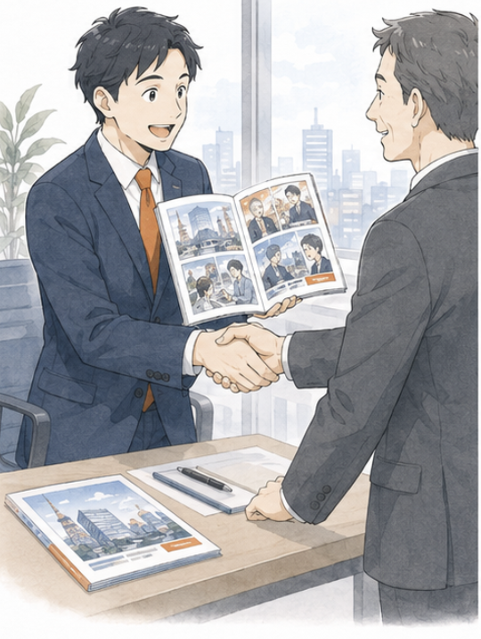
取引先・新規顧客に渡す
営業現場で渡す会社案内パンフレットを会社紹介漫画（パンフレットマンガ）形式にすると、商談時の「読まれずに終わる」率が大きく下がります。最初の3分で創業ストーリーが伝わるため、その後の商談が「条件交渉」ではなく「価値共感」を起点に進みます。
取引先・新規顧客に「あの会社、こういう想いでやっているんだ」と記憶してもらえるため、価格競争に巻き込まれにくく、長期的な取引関係を構築しやすくなります。
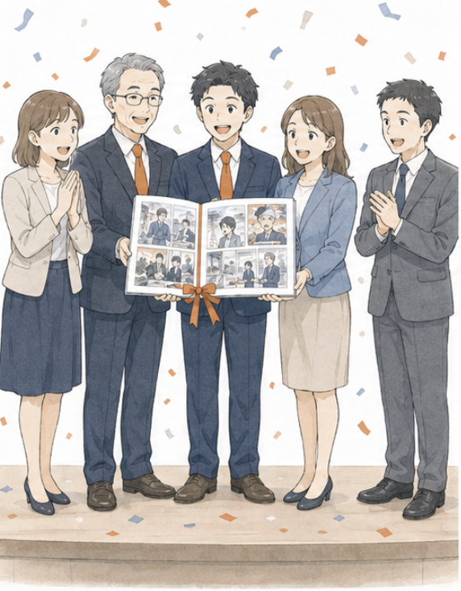
10周年・50周年に残す
10周年・30周年・50周年といった節目に発行する社史・記念誌は、これまで「年表＋写真」が定番でしたが、社員にも読まれず棚で眠るケースが大半でした。漫画形式なら、入社1年目の若手社員から退職OBまで、世代を超えて読まれる「形に残る贈り物」になります。
創業者・経営陣の想い、過去の転換点、苦楽を共にした社員の物語を、未来の世代に「読まれる形」で残せます。会社のアイデンティティを継承する文化資産としての価値があります。
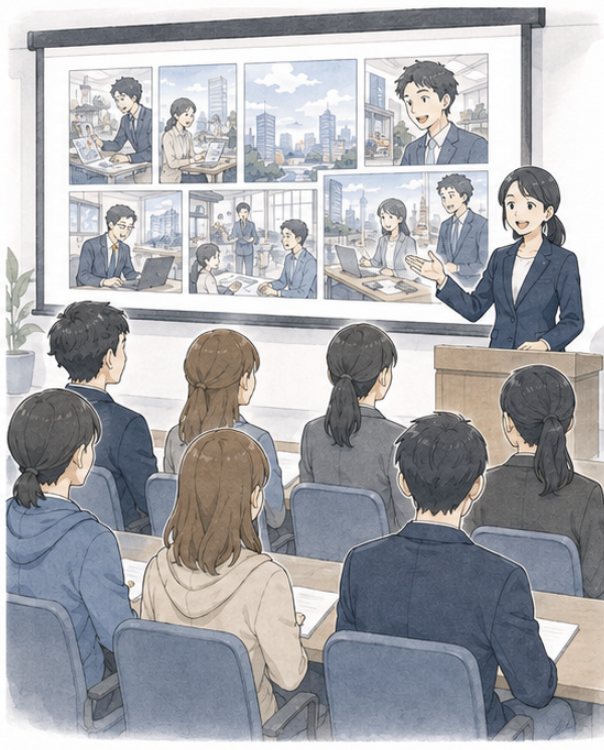
求職者・新人に世界観を伝える
採用説明会・会社説明スライドの冒頭に会社紹介マンガを差し込むと、求職者の理解スピードと心理的距離が一気に縮まります。説明会終了後の「うちの会社、どうだった？」アンケートで好意度が大きく上昇します。
新入社員研修でも同じ漫画を活用すれば、配属後も「会社の世界観」を共通言語として保てます。採用→入社→現場までを一貫した物語で繋げられる点が、漫画形式の最大の強みです。
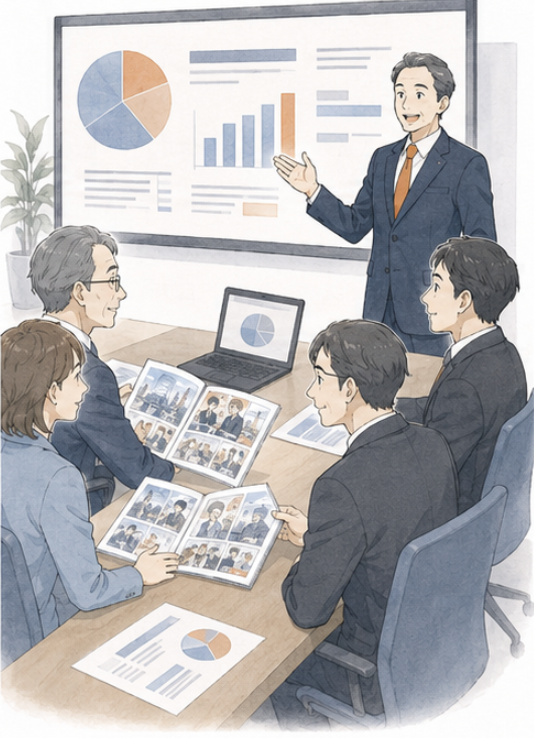
投資家・株主に物語で伝える
個人投資家・新規株主に向けて、ビジネスモデルや創業からの歩みを漫画で伝えると、決算資料だけでは届かなかった「会社の温度感」が伝わります。投資判断を「数字」だけでなく「物語」で後押しできます。
統合報告書・株主総会資料に挿入することで、専門用語が並ぶIR文書の中に「読みたくなる入り口」を作れます。中長期保有を促進する効果が期待できます。
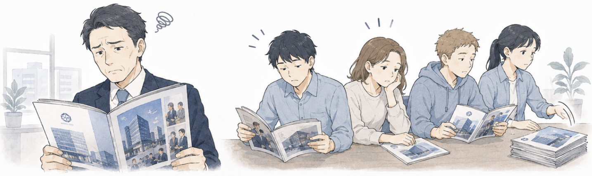
創業の想い・企業文化が、文字では伝わらない。
会社案内に「お客様第一」「挑戦の文化」と書いても、どこも同じ言葉。創業の苦労や転換点の覚悟が、相手に届いている実感がない。
会社案内・コーポレートサイト・採用ページに並ぶ「ビジョン」「ミッション」「バリュー」は、ほぼすべての会社が同じ語彙で書いています。読み手は1日に何十社もの会社案内を見るため、抽象語の差別化はほとんど機能しません。
会社紹介マンガは、創業者の挫折・転換点・覚悟を物語として描きます。読み手は登場人物の感情を通じて「この会社は本気だ」と肌で理解でき、抽象語では届かない「自分ごと化」が起きます。
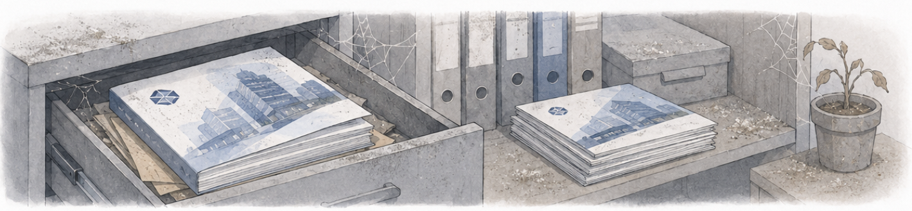
周年記念誌を作っても、社員にすら読まれない。
10周年・30周年・50周年。せっかく予算をかけた記念誌が、配布された日にデスクの引き出しに入って、そのまま忘れ去られる。社員の手にも届かない。
従来の記念誌は「年表＋写真＋経営者挨拶」というフォーマットが定番ですが、配布された社員の多くは目次を眺めるだけで終わるのが現実です。新入社員にとっては「過去の話」、ベテランにとっては「自分が知っている話」になり、誰にも刺さらないドキュメントになりがちです。
漫画形式の記念誌は、若手社員から退職OBまで、世代を超えて読まれます。創業期の苦労や転換点での意思決定が物語化されることで、会社のアイデンティティを次世代に継承できる「文化資産」になります。実際に、漫画版社史を制作した企業では、社員の自社理解度・帰属意識が大きく改善した事例が報告されています。
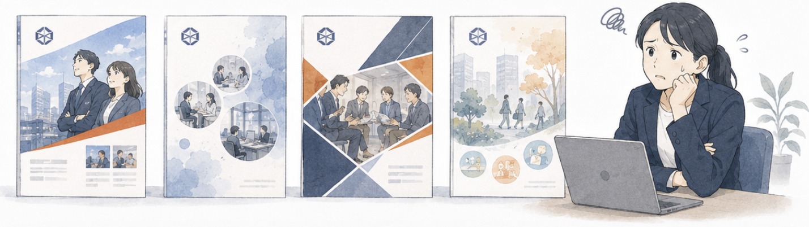
採用・営業・IRで別々の会社案内を作っている。
求職者向け、取引先向け、株主向け、社員向け。同じ会社の話なのに、それぞれ別の資料を作って、どれも中途半端。ブランドの一貫性も保てない。
多くの企業では、採用パンフ・営業会社案内・IR資料・社内向けインナーブランディング資料を、それぞれ別の担当部門が別の制作会社に発注しています。結果として、同じ会社の話なのに「テーマも文体も世界観もバラバラ」な資料が乱立し、ブランドの一貫性が損なわれます。
会社紹介マンガは、1本制作すれば全ステークホルダーに展開できる「企業の物語の核」になります。求職者向けには採用パートを強調し、株主向けにはビジネスモデルパートを強調する、といった編集だけで派生展開でき、コストとブランドの一貫性を両立できます。
その悩みは、
「会社紹介マンガ」で解決できます。
※ 本ページに記載の数値はすべて自社調べ（2025年度実績・サンプル限定）です。実際の効果は案件により変動します。
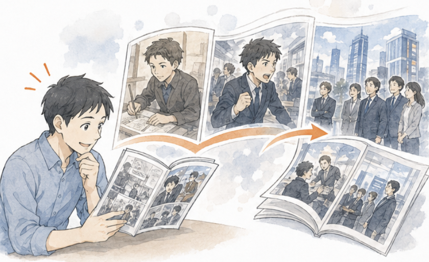
読み手は登場人物の感情とともに「この会社の歴史」を追体験できます。年表では伝わらない、創業者の挫折・転換点・覚悟が伝わります。
会社の歴史は、本来「人の物語」です。誰が、どんな課題に直面し、どう乗り越えたか。その積み重ねが今の会社を作っています。しかし従来の年表式社史では、その「人の物語」がほぼ排除されてしまいます。
会社紹介マンガでは、創業者・キーパーソンを登場人物として描き、各時代の意思決定を「感情と一緒に」追体験できます。読み手は「この会社、こういう人がこういう想いでやってきたんだ」と自分ごと化でき、文章では届かない深いブランド理解が生まれます。
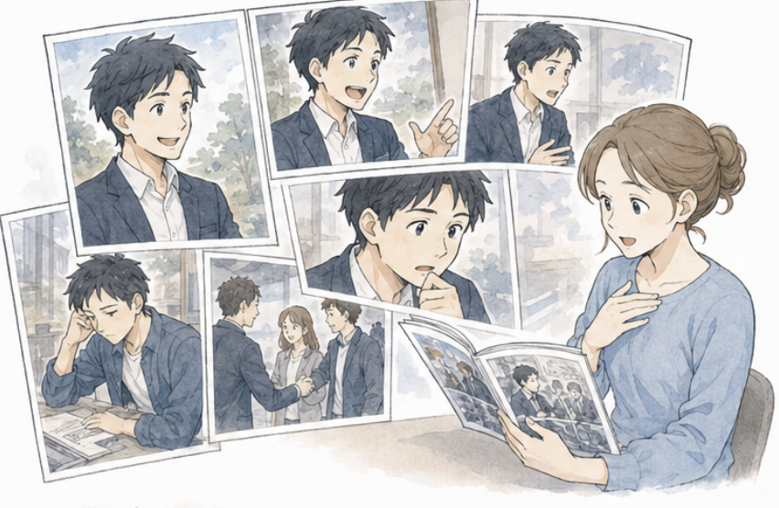
挨拶文では伝わらない、経営者の素顔・葛藤・夢を漫画として届けられます。共感が生まれ、ブランドへの信頼に繋がります。
会社案内の「代表挨拶」は、ほぼすべての会社が似たような構成・文体になっています。読み手は2〜3行で読み飛ばし、経営者の人となりが残らないまま終わります。
会社紹介マンガでは、経営者をキャラクターとして登場させ、創業時の不安・転換点での決断・現在の想いを物語として描きます。読み手は経営者を「人」として認識でき、共感や信頼が生まれます。これは採用・営業・IR・取引先のあらゆる接点で長期的に効く効果です。
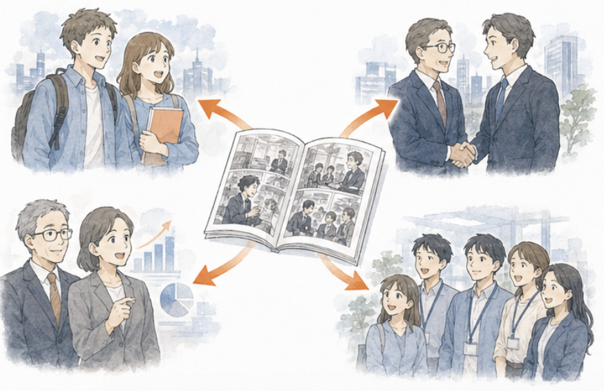
1本の漫画を全ステークホルダー向けに派生展開できます。資料制作コストを抑えながら、ブランドの一貫性を保てます。
これまで「採用は採用パンフ、営業は会社案内、株主はIR冊子」と別々に発注していた制作物を、1本の会社紹介マンガから派生展開できます。求職者向けには働く人パート、株主向けにはビジネスモデルパート、取引先向けには事業価値パートをそれぞれ強調する編集だけで完結します。
結果として、年間ベースのコーポレートコミュニケーション制作コストが大幅に下がり、かつ全部門・全ステークホルダーに対して「同じ世界観」を届けられます。ブランド一貫性は、長期的な企業価値の核です。
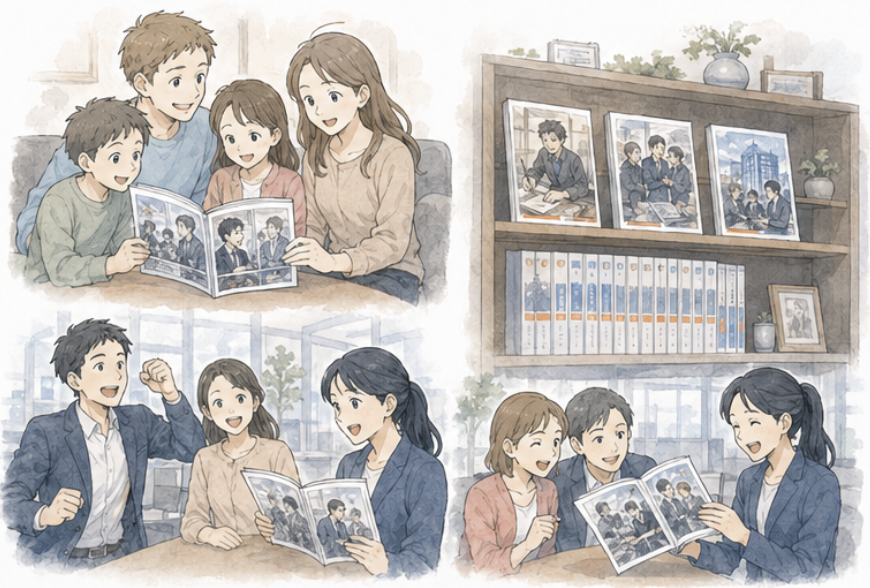
10周年・50周年の節目に「読まれない年表」ではなく「世代を超えて読まれる物語」を残せます。社員のエンゲージメントも高まります。
周年事業の予算は、企業によっては数百万〜数千万円規模になりますが、その大半は記念誌・記念パーティ・記念品で消えていきます。記念誌は配布後すぐに棚で眠り、誰の記憶にも残らないというのが多くの企業の実情です。
漫画版周年記念誌は、社員の自宅にも持ち帰られ、家族にも読まれる「珍しい配布物」になります。社員の家族が会社のことを理解する稀な機会となり、社員エンゲージメントの向上にも貢献します。10年後、20年後の社員が読み返せる「文化資産」として残せる点が、最大の価値です。
会社紹介マンガとして実際に納品した事例から、抜粋してご紹介します。
クライアント: FRESH CAREER／媒体: ブランディング / Web掲載
FRESH CAREER代表・濱田将匡氏の原体験と経営理念をストーリー漫画化。信頼をつなぐ想いを感情に訴える構成で表現。
「自分のストーリーがここまで伝わる形になるとは思いませんでした。採用候補者にも好評です。」この事例を詳しく見る →

クライアント: Birdman／媒体: IR資料（株主・投資家向け配布） / コーポレートサイト（IR情報ページ） / 臨時株主総会資料
「決算資料の数字を経営者と社員のドラマに変換し、増資の意図と事業戦略が"読むだけで腹落ちする"構成。」
「「IRレポートは普通、読まれません。漫画にしたことで"なぜ増資するのか"が投資家にも社員にも一目で伝わるようになりました。」」この事例を詳しく見る →

クライアント: 鵜池航太／媒体: ブランディング / Webサイト
弁護士の原体験と信念をWebtoon形式のストーリー漫画で表現。感情に訴える構成で、人となりへの深い理解と共感を生み出します。
この事例を詳しく見る →クライアント企業向けに制作した会社紹介マンガを、ビズ書庫から抜粋して掲載しています。タップ／クリックすると、全画面のビューアで作品を読めます。
読み込み中…
ヒアリングから納品まで、8つのステップで進行します。各ステップをクリックすると、左の編集者ノートに参考画像と詳しい解説が表示されます。
お問い合わせ前に解消しておきたい疑問を、編集担当目線でまとめました。ここに無いご質問はお気軽にお問い合わせください。
創業者・経営陣・社員へのインタビューから企画・作画・納品まで、専任の編集担当が伴走します。30分の無料相談で、貴社の規模と目的に最適な構成・ページ数・予算感をご提案いたします。発注義務はありません。周年事業のスケジュールに合わせた逆算スケジュールも対応可能です。